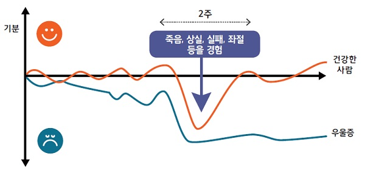
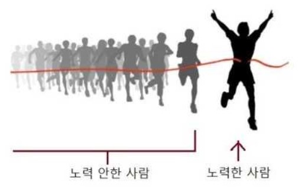

계속해서 환자 라던가 치료 라는 단어를 반복해서 사용했습니다만.
실제로 약물치료와 인지행동치료 상담치료만으로 해결이 가능했다면
이런 요법들이 널리 보급되어 국내에 정신질환자가 없어야 하는데 현실은 그렇지 못합니다.
병원에서 아무리 치료를 받고 회복을 한다고 해도 밖을 나가는 순간
세상이라는 전쟁터에서 또 금방 총탄을 맞고 쓰러질 것이 뻔하기 때문입니다.
약물치료와 인지행동치료가 사회의 잔혹함에 대해 조금 둔감하게 해주고
사회 구조를 이해시킴으로써 조금더 유연한 대응을 하게 학습시킨다고 한들
원인 그 자체를 없앨수는 없는 것입니다.
정신질환을 가지고 있다고 해서 나라에서 공짜로 보조금이나 지원금 혜택을 주는것도 아니기 때문에
거친 사회에서 질병을 질질 끌면서라도 어떻게든 학업과 경제활동을 계속하며
살아나가야 하는것이 우리들 불안장애자이기 때문입니다.
이런 이야기를 들을 때마다, 정신질환을 가진 사람의 입장에서는
자신이 매우 가치없고 쓸모없게 느껴질 뿐이며, 자신은 세상에 필요없는 존재가 되어버린 느낌을 가집니다.
이는 간접살인에 가깝습니다. 더 힘을 낼 수 없다면 죽으라는 말과 같기 때문입니다.
전쟁터에서 부상당해 다리가 잘려서 실려온 군인에게
왜 한명도 쏴죽이지 못하고 지기만 했냐고 면박을 주는것과 같습니다.
우울증 환자 모두가 불안장애를 가지고 있는것은 아니지만
불안장애는 우울을 동반하기 쉽습니다, 그러므로 우울증은 뗄레야 뗄수없는 주제입니다.
우울증에 대한 인식도 처참한 수준이지만 그나마 불안장애보다는 사회적으로 널리 인식된 증세이기에
우울증 또한 불안장애와 엮어서 설명하려고 합니다

상실과 불안 그래프에 대해서는 위와 동일하지만, 불안-우울장애의 경우에는
같은 일을 여러번 겪어 특화된 체험에 의해 우울이 고착화되어 지속된다는 특징이 있습니다.
즉, 일반적인 우울증에 비해 그 수렁에서 벗어나기 더더욱 힘들다는 것입니다.
여러번 실패와 좌절을 겪었기에, 우울증과 마찬가지로 무기력을 가지고 있는 상태에서
한층 더 나아가 그 상실을 상쇄하기 위한 보상이 몇십배에서 몇백배는 더 필요하다는 점입니다.
한두번의 운좋은 일로써는 학습된 무기력과 불안을 한번에 지울수는 없는 것입니다.
그러나 조건없는 간단한 보상은 일반적인 사회생활에서는 기대할 수 없는 일이며
한번 실패하면 다시 올라가기 힘든 현대사회의 특성상 이들의 입지는 더더욱 줄어들 수 밖에 없습니다.
우울증에 의한 자살은 물론이고
정신질환을 가진 이들은 일반적인 사회생활에 어려움을 겪기 때문에
불안장애와 우울증을 가진 이들은 평균소득이 낮아지기 마련이며,
이런 사회적 박탈은 또 우울의 원인이 되는 등의 악순환이 반복됩니다.
그러나 이에대한 실질적인 사회안전망은 그저 형식적인 수준에 불과하여
수입과 소득의 확보는 일반인들에 비해 그 난이도가 상당히 높은편에 속합니다
이렇듯 모든 행동에 제약이 있고 일반인들보다 실행력이 뒤떨어진다는 점에 있어서,
불안장애를 가진 이들의 생활패턴이나 행동반경은 어느정도 정해져 있는 편입니다.
그러나 불안장애를 가졌다고 해서 딱히 지능이 뒤떨어지거나 하는것은 아니기 때문에
이들도 자기가 할 수 있는 한도 내에서 최선의 선택을 하려고 노력하기 마련입니다.
우울을 가진 사람은 기분장애가 없는 사람보다도 더 자기객관화가 투철하게 되어
[자신이 할 수 없는 일]과 [자신이 할 수 있는 일]의 구분을 명확하게 하는 편입니다.
히키코모리나 집순이 라고 불리우는 사람들이 생각보다 자기 공간 안에서는 안심하고 있을 수 있는것이
바로 이 [자신이 제어할 수 있는 환경]에 있을 때 입니다.
세상은 위험으로 가득 차 있지만 자신의 공간 만큼은 누구에게도 침해받지 않고
자신이 원하는대로 만들어나가고 제어 할 수 있기 때문에
그곳에 몰입하는 동안만큼은 불안감에서 자유로워질 수 있는 것입니다.
특히 특정 취미나 재능을 가진 작업에 몰두하는 이른바 오타쿠들은
사교활동을 하지 않고도 충분히 만족된 일상생활을 보낼 수 있기 때문에
외부의 간섭이 없는 환경이라면 많은경우 보다 안정된 일상생활을 영위할 수 있을것으로 판단됩니다.
문제는 사회불안장애는 사교적 활동에서 두드러지게 발생한다는 것인데.
메일이나 인터넷 통신으로만으로도 충분히 커뮤니케이션을 할 수 있는 시대임에도 불구하고
직접 사람과 대면하거나 얼굴을 마주보아야 하는 일은 반드시 생기기 마련입니다.
특히 스트레스에 견디는 능력이 부족하고, 회복탄성력이 부족한 사회적 약자인 입장에서
불안장애를 가진 이들 모두가 재택근무를 할 수 있는것도 아니며,
고학력과 기술을 요구하는 고위직에 있을 가능성은 적고
대다수 사회 하위계층에서 감정노동을 강요당하는 위치에 있을 가능성이 큽니다.
적나라하게 이야기하자면 여타 샐러리맨과 같이, 감정쓰레기통의 역할을 감수하게 된다면,
아무리 대기업에 들어간다 한 들 이들이 버틸 가능성은 없다고 볼 수 있습니다.
불안장애를 가진 사람들이 가장 두려워하는 것이야 말로
자신이 제어할 수 없는 겉잡을 수 없이 무력함을 느끼게 되는 환경이며,
이는 집단주의 사회일수록 더욱 사회 전반적으로 군대식 명령이나, 강압적인 사회 분위기 등의
개인의 힘을 무력화 시키는 분위기가 조장되어 밖으로 나가지 못하게 되는 현상을 가속화 시킵니다.
그러므로 불안장애를 가진 사람들은 어떻게 해서든지 자신의 위치를 안정적이게 확립하고자 노력하나
이런 생존전략에서 살아남은 사람들은 극히 소수에 불과하게 되는 현실에 마주하게 됩니다.
